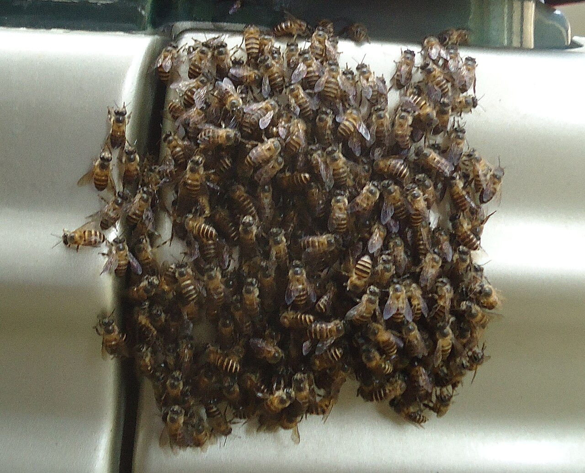

서로위키는 집단이 전문가를 이기는 네 가지 조건을 정리했습니다 — 의견의 다양성 · 개인의 독립성 · 지식의 분산 · 좋은 집계 메커니즘. 이 네 가지가 있으면 군중의 평균이 최고 전문가보다 정확합니다.
위키피디아는 증명입니다. 수십만 편집자가 각자의 국소 지식을 조각내 올리고, 반복적으로 검증합니다. 단일 편집장이 쓴 백과사전은 결코 이기지 못했습니다.

꿀벌은 새 둥지를 투표로 고릅니다